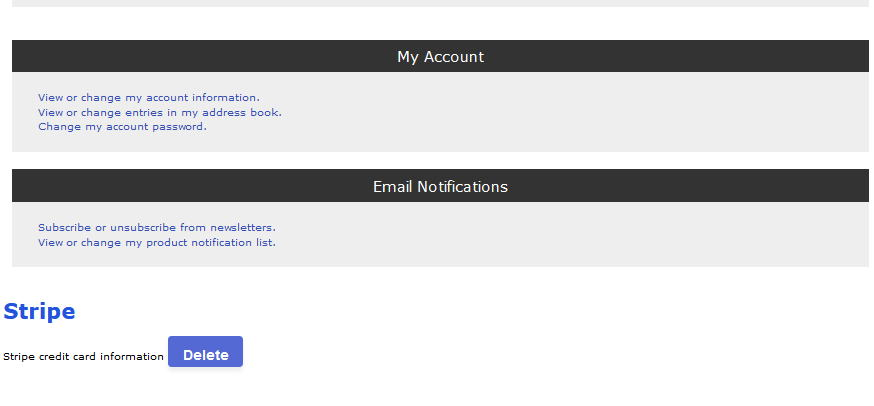

Stripe決済モジュール説明書 for Zen cart version 1.5.8
はじめに
- このモジュールは決済代行会社Stripeより提供されるサービスを利用するためのものです。このサービスを利用するには決済代行会社Stripeとの契約が必要となります。
- このモジュールは137種類の通貨を取り扱いが可能
- インストール前、インストール後及び運用時における必要事項
- インストール前：全てのファイルとデータベースをバックアップしてください。特に上書きするファイルは 必ずバックアップをしてください。インストール作業は自己責任となります。
- インストール後：テストモードにて動作を確認してください。決済した金額が正しいか、Stripeダッシュボードのテスト環境においての、支払い=>成功金額と、Zen cartの管理画面「顧客・注文の管理⇒注文管理」注文合計を比較し同じか確認してください。
- 運用時：このモジュールインストール時はテストモードがデフォルト値となっています。テスト終了後、本番は必ずテストモードを「false」にしてください。決済代行会社Stripeから提供されるシークレットキーは公開しないでください。.
- 重要：APIキーを変更した後は必ず下記手順を実行してください。
管理画面=>追加設定・ツール=>SQLパッチのインストールを選択し、「ファイルから読み込む」に添付ファイル erase stripe
records.sqlを選択、アップロードボタンを押してください。または、 TRUNCATE ` stripe `; をクエリ文を「貼り付けて実行してください」欄に貼り付け、送信ボタンを押してください。
- このモジュールに起因する損害は補償できませんので、必ず事前に取り扱う通貨全ての作動試験を行うとともに、運用開始した後も、正常に作動しているかを確認してください。
作動要件
- Zen Cart version 1.5.8
- SSL(SSLが必要です。SSL無しでインストールした場合、注文確認ボタンを押すとエラーが発生します。)
- PHP 7.3から8.2
インストール方法
- ダウンロードしたファイルを解凍してください。
- テンプレートフォルダー名の変更
- Stripe_module_zc158/www/includes/templates内にあるYOUR_TEMPLATEフォルダー名を適用するテンプレートファイル名に変更
- 上書きファイルは下記5つのファイルです。
- Stripe_module_zc158\www\includes\templates\YOUR_TEMPLATE\templates\tpl_account_default.php
- Stripe_module_zc158\www\includes\templates\YOUR_TEMPLATE\templates\tpl_checkout_confirmation_default.php
- Stripe_module_zc158\www\includes\languages\english\lang.account.php
- Stripe_module_zc158\www\includes\database_tables.php
- Stripe_module_zc158\www\includes\init_includes\init_header.php
-
- ファイルのアップロード
- Stripe_module_zc158=>www=>includes内のすべてをZen cartのincludes内に全て貼り付けしてください。
- アップロードすると、管理画面=>モジュール=>支払いモジュールの設定にStripe Payment : Credit Cardが追加されます

- モジュールインストールボタンを押すと、Stripe決済モジュールがインストールされ、下記項目が表示されます。
- Stripe決済モジュール・・・・・ True(有効)/False(無効) デフォルト値True
- テストモード・・・・・ Stripe決済モジュール True(有効)/False(無効) デフォルト値True
- ペイメントゾーン・・・・・ Stripe決済モジュールが有効な地域を限定することができます。 デフォルト値空白
- 並び順の設定・・・・・ 顧客が決済選択時に、他決済モジュールとの並び順を設定することができます。デフォルト値 0
- API公開キー・・・・・ Stripeより提供された公開キーを入力
- AIPシークレットキー・・・・・ Stripeより提供されたシークレットキーを入力
- テストモード API公開キー・・・・・ Stripeより提供されたテスト用公開キーを入力
- テストモード APIシークレットキー・・・・・ Stripeより提供されたテスト用シークレットキーを入力
Stripe決済モジュールのテスト(本番前には必ずテストモードで運用試験してください。)
- 管理画面（テストモード)
- 決済代行会社Stripeより提供された、API公開キー、AIPシークレットキー、テストモード API公開キー及びテストモード APIシークレットキーを、間違えないように正確にそれぞれ入力し、アップデートボタンを押します。
- ショップ画面（テストモード)
- 商品をカートに入れ、お買い物手続きから支払い手続きに移行します。
- 支払い方法画面においてStripe決済を選択すると、クレジット決済画面が表示されます。クレジット決済画面が出ない場合は、APIキーを間違えている可能性がありますので、管理画面にてご確認ください。

- クレジットカード番号に4242 4242 4242 4242を入力、有効期限は本日以降、CVCは適当な3桁の数字を入力し、決済を完了してください。
- Stripeダッシュボードの左上にある「支払い」をクリックし成功を選択します。
- Zen cartで登録したメールアドレスと注文合計を確認し、Stripeダッシュボードでの金額とメールアドレスを確認します。支払い=>成功画面右端の「・・・」をクリックすると、領収書送信及び顧客のメールアドレスと氏名を表示することができます。
NOTE：Stripeのシステム上、米ドルやユーロなど、小数点第2位まで使用する通貨はStripeサーバーに100倍にして送信します。Stripeサーバーは、受け取った数字を1/100に変更し管理します。日本円は小数点がないため、そのままの数字をStripeサーバーに送信します。このモジュールでは、通貨によって自動的に変換しますが、本番前に必ず取り扱う通貨全てにおいて運用試験してください。このことが原因による損失は当方では負担しません。
顧客側からのクレジット決済情報の削除方法
顧客のクレジットカード情報は暗号化し、データベースに登録されていますが、顧客の判断により削除することが可能です。
マイアカウントの下にStripeクレジットカード情報削除ボタンにより削除することができます。削除後は、この表示も消えます。

本番 (テスト終了後)
- 管理画面=>モジュール=>支払いモジュールの設定にStripe Payment : Credit Cardを選択し、編集ボタンを押します。
- テストモードをTrueからFalseに変更し、更新ボタンを押してください。
- Stripe Payment : Credit Card項目内に赤色で何も表示されていないことを確認してください。
- ショップ画面上部に赤帯の「STRIPE IS IN TESTING MODE」が表示されないことを確認してください。
重要：APIキーを変更した後は必ず下記手順を実行してください。
管理画面=>追加設定・ツール=>SQLパッチのインストールを選択し、「ファイルから読み込む」に添付ファイル erase stripe
records.sqlを選択、アップロードボタンを押してください。または、 TRUNCATE ` stripe `; をクエリ文を「貼り付けて実行してください」欄に貼り付け、送信ボタンを押してください。
NOTE :テスト終了後、APIキーを変更した後に上記SQLを実行する意味は、APIキーとStripeカスタマIDは関連しているため、APIキーが変更されると間違ったStripeカスタマIDがStripeサーバーに送られStripe決済フォームが表示されなくなります。上記手順により、StripeカスタマIDが全て削除されます。
NOTE : Stripeダッシュボード=>支払い=>すべてを見ると、未完了が多数表示されますが、これはZen cartの支払い画面が表示される毎にpi_xxxxxxxxxxxxxxが発行されるためと、StripeサーバーとZen
Cartの仕様上、1回の決済につき2個のpi_xxxxxxxxxxxxxxが発行されるためです。
アンインストール
- 管理画面=>モジュール=>支払いモジュールの設定にStripe Payment : Credit Cardを選択し、アンインストールボタンをクリックしてください。
- 管理画面=>追加設定・ツール=>SQLパッチのインストールを選択し、「ファイルから読み込む」に添付ファイル uninstall_stripe.sqlを選択し、アップロードボタンを押してください。または、 DROP
TABLE IF EXISTS `stripe`; をクエリ文を「貼り付けて実行してください」欄に貼り付け、送信ボタンを押してください。
技術情報
- 支払い画面のStripeフォーム <tpl_checkout_confirmation_default.php>
- <form id="payment-form">
<div id="payment-head" style="color: #2254dd; font-size: 24px; font-weight: bold; margin:24px 0 12px;">Stripe</div>
<div id="payment-element">
</div>
- </form>
- 支払い画面のStripeメッセージ<tpl_checkout_confirmation_default.php>
- <div id="payment-message" class="hidden"></div>
- 支払い画面のStripeボタン<tpl_checkout_confirmation_default.php>
- <button id="submit">
<div class="spinner hidden" id="spinner"></div>
<span id="button-text"><?php echo BUTTON_CONFIRM_ORDER_ALT; ?></span>
</button>
- 支払い画面Script<tpl_checkout_confirmation_default.php>
- <script>
if (typeof clientS === 'undefined') {
document.getElementById('btn_submit').display ="block";
document.getElementById('checkout_confirmation').display ="block";
document.getElementById('payment-form','submit').style.display ="none";
}else{
document.getElementById('btn_submit').style.display ="none";
document.getElementById('checkout_confirmation').style.display ="none";
document.getElementById('payment-form','submit').display ="block";
}
</script>
- マイアカウントStripeクレジット情報削除<tpl_account_default.php>
- <?php
$dir_delete_php = DIR_FS_CATALOG . DIR_WS_FUNCTIONS . 'stripe_data_delete.php';
require $dir_delete_php;
stripe_id_exist();
$class="";
if ($registered_customer === 'false') {
$class="hide";
}elseif($registered_customer === 'true'){
$class="";
echo '<h2 style="color: #2254dd; font-size: 24px; font-weight: bold;">Stripe</h2>';
echo TEXT_STRIPE_CARD_INFORMATION ;
}
?>
<style>
.hide{display:none;}
</style>
<form method="post">
<input type="submit" name="Delete" id="btn_delete"
value="<?PHP echo TEXT_DELETE_STRIPE ?>"
class="<?PHP echo $class; ?>">
</form>